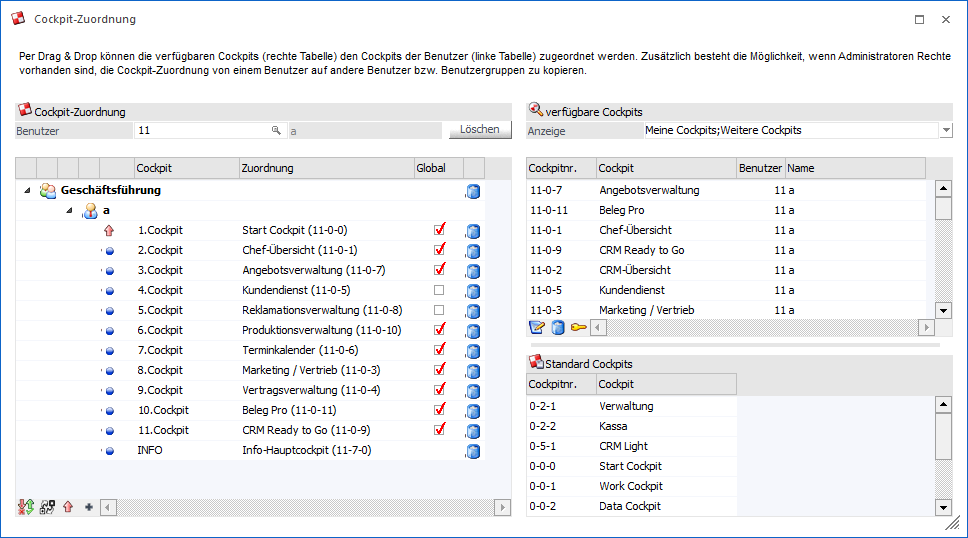
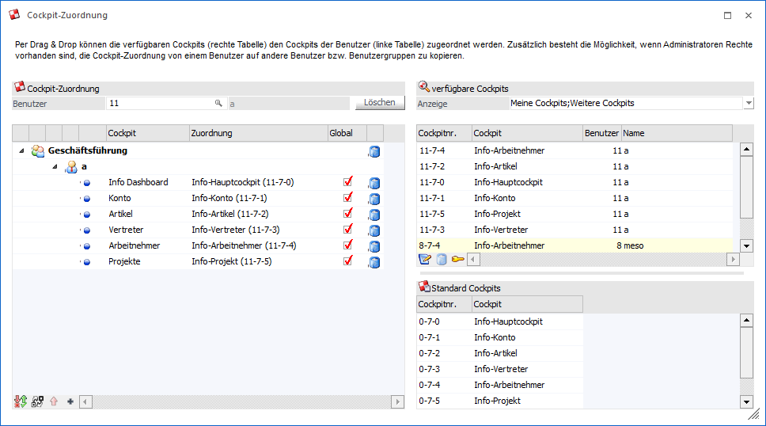

Das Programm "Cockpit-Zuordnung" wird im Cockpit-Ribbon über den Button
1 Cockpit Zuordnung
aufgerufen. Die Möglichkeiten innerhalb der Cockpit-Zuordnung sind hierbei abhängig von der Applikation, aus welcher das Programm geöffnet wird.
WinLine START
Bei einem Aufruf über die WinLine START können die folgenden Haupttätigkeiten durchgeführt werden:
ü Erstellung von neuen WinLine START Cockpits
ü Änderung von bestehenden WinLine START Cockpits
ü Zuweisung von WinLine START Cockpits an Benutzer oder Benutzergruppen

WinLine INFO
Bei einem Aufruf über die WinLine INFO können die folgenden Haupttätigkeiten durchgeführt werden:
ü Erstellung von neuen WinLine INFO Cockpits
ü Änderung von bestehenden WinLine INFO Cockpits
ü Zuweisung von WinLine INFO Cockpits an Benutzer oder Benutzergruppen

Die Cockpit-Zuordnung ist hierbei jeweils in mehrere Bereiche unterteilt, welche in den nachfolgenden Kapiteln beschrieben werden:
ü WinLine START - Tabelle "Cockpit-Zuordnung"
ü WinLine INFO - Tabelle "Cockpit-Zuordnung"
ü Tabelle "verfügbare Cockpits"
Buttons
Ø Ok
Durch Anwahl des Buttons "Ok" bzw. der Taste F5 wird die Cockpit-Zuordnung gespeichert.
Ø Ende
Durch Anwahl des Buttons "Ende" bzw. Taste ESC wird das Programm geschlossen und nicht gespeicherten Zuordnungen verworfen.
Ø Wiederherstellen und Aktualisieren
Mit Hilfe dieses Buttons werden alle nicht gespeicherten Zuordnungen verworfen alle Tabellen aktualisiert.
Ø Cockpit-Zuordnung kopieren
Durch Anwahl des Buttons "Cockpit-Zuordnung kopieren" können die Zuordnungen eines Benutzers auf andere Objekte übertragen werden (nähere Informationen entnehmen Sie bitte dem Kapitel Cockpit-Zuordnung kopieren).
Ø Liste Cockpit-Zuordnung
Mit Hilfe des Buttons wird die Auswertung "Liste Cockpit-Zuordnung" geöffnet. In dieser können alle getroffenen Zuordnungen dargestellt werden (nähere Informationen entnehmen Sie bitte dem Kapitel Liste Cockpit-Zuordnung).
Ø neues Cockpit
Mit Hilfe dieses Buttons kann ein neues Cockpit erstellt werden.